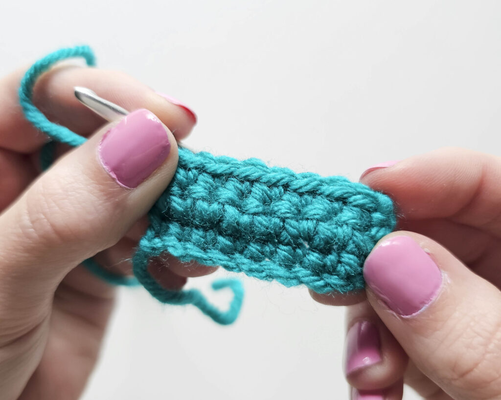
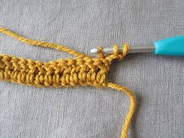

Explore the Art of Handmade Crochet Creations
Crochet is a beautiful craft that uses yarn and a hook to create handmade items such as scarves, blankets, bags, toys, and decorative accessories. It is both relaxing and creative, allowing crafters to transform simple yarn into unique works of art.

Single Crochet (SC) is one of the most basic and commonly used crochet stitches. It creates a firm and dense fabric, making it ideal for amigurumi toys, bags, and decorative projects.

Double Crochet (DC) is a taller stitch that creates a softer and more open texture. It is widely used for blankets, scarves, shawls, and lightweight crochet garments.